Profil
Ma passion est de créer des jeux, des expériences, des histoires.
Je m’amuse à imaginer des œuvres qui ont du sens pour ceux qui y voyagent, qui laissent une marque, qui changent leur perception du Monde et de l’Homme.
Je désire créer, entouré de gens aussi passionnés que moi, des œuvres ludiques qui laisseront leurs empreintes dans le cœur des joueurs et dans celui de l’industrie.
Mes jeux préférés
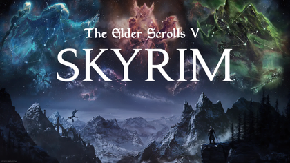
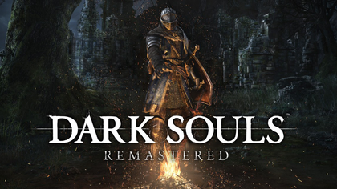
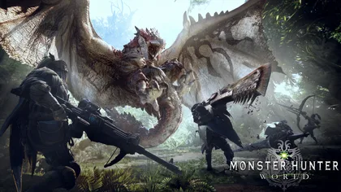
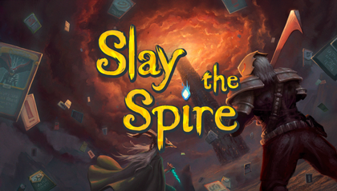
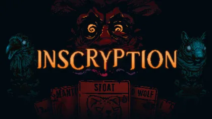
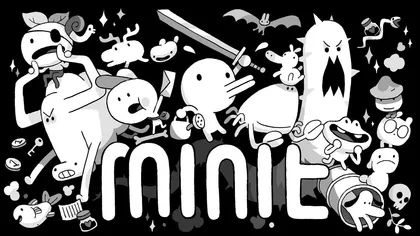
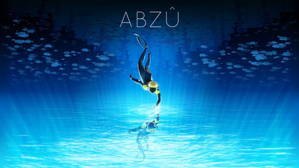
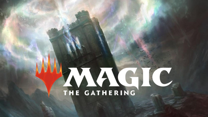
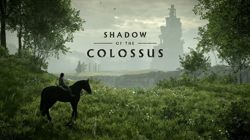
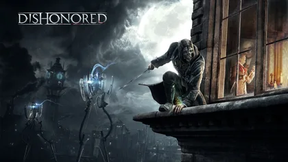
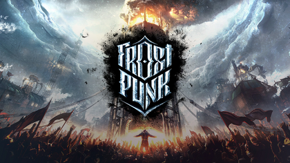
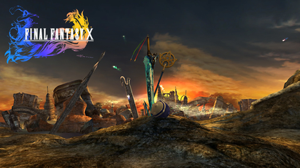
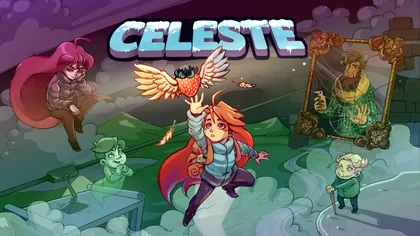
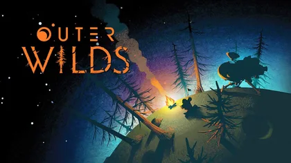
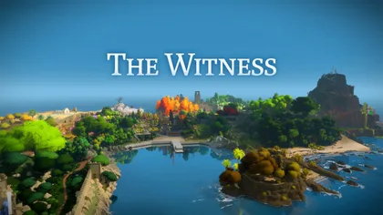
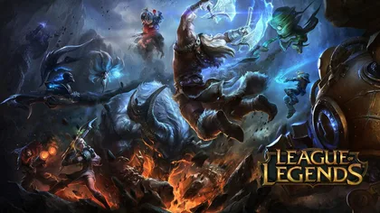